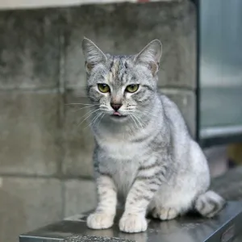
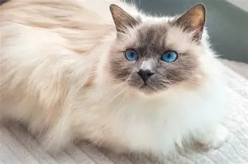

Gatos
-

Raza esfinge
El gato Sphynx es una raza originaria de Canadá, conocida principalmente por no tener pelaje. Su piel es suave y tibia, parecida al terciopelo, y presenta muchas arrugas. Tiene orejas grandes, cuerpo musculoso y ojos llamativos
Cuidados
-Necesitan baños frecuentes porque su piel produce grasa
-Deben protegerse del frío y del sol
-Revisiones veterinarias regulares para prevenir enfermedades cardíacas (comunes en la raza).
promedio de vida
promedio de 12 a 15 años.
-

Raza Ashera
gato Ashera se creó en Estados Unidos como un híbrido entre serval africano, leopardo asiático y gato doméstico, aunque algunos expertos lo consideran una variación del gato Savannah
Cuidados:
-Espacio: Necesita mucho espacio para correr, trepar y ejercitarse, ya que es muy activo
-Alimentación: Dieta de alta calidad, rica en proteínas
-Atención: Requiere mucho contacto y estímulo, no es un gato que se adapte a la soledad prolongada
-Salud: Visitas frecuentes al veterinario; algunos son más propensos a problemas genéticos por ser híbridos
-Entretenimiento: Juguetes, rascadores y actividades que le permitan usar su inteligencia y energía
Promedio de vida:
De 12 a 16 años
-

Raza Australian Mist
El australian mist o gato de la niebla es una raza desarrollada en Australia en 1976. Desciende del cruze entre diversas razas de gato incluidos los birmanos, los abisinios y otros gatos de pelo corto nacionales de Australia. El Dr. Truda Straede, creador, quería lograr un gato con todas las características de sus predecesores, eso sí, con un carácter simpático, activo y de buen humor..
Cuidados:
Alimentación: dieta equilibrada y control de porciones.
Ejercicio: juegos diarios, rascadores y zonas para trepar
Higiene y salud: cepillado semanal, limpieza de orejas/ojos y revisiones veterinarias
Compañía: sociable, necesita interacción diaria y no soporta la soledad.
Promedio de vida
De 12 a 16 años
-

Raza Birmano
El gato birmano es una raza de gato doméstico originaria de Birmania (actual Myanmar). Se caracteriza por su pelaje largo y sedoso, sus ojos azules y su patrón de color distintivo, que incluye un cuerpo claro con extremidades, cara y cola más oscuras. Los birmanos son conocidos por su temperamento dulce y afectuoso, lo que los convierte en excelentes compañeros para las familias. Son gatos sociables que disfrutan de la compañía humana y suelen llevarse bien con otros animales domésticos. Además, son bastante activos y juguetones, lo que los hace ideales para hogares con niños
Cuidados:
Alimentación: dieta balanceada y control de porciones.
Ejercicio: juegos diarios y rascadores.
Higiene: cepillado 2–3 veces por semana y limpieza básica de orejas/ojos/dientes.
Compañía: sociable, afectuoso y necesita atención diaria.
Esperanza de vida:
De 12 a 16 años
-

Raza Abisinio
El gato abisinio es una raza de gato. Es una raza popular debido a su apariencia física y su personalidad. Tanto en reposo como en movimiento, este animal muestra una gran elegancia y armonía en sus movimientos. Es una amable, pero fuerte mascota, bastante juguetona.
Cuidados:
Comida: alimento de calidad y agua fresca siempre
Pelaje: cepillado 1 vez por semana
Salud: vacunas, desparasitaciones y revisiones al día.
Actividad: necesita juegos, rascadores y espacio para trepar.
Compañía: es sociable, no le gusta estar solo.
Vida promedio:
De 12 a 15 años de vida
Ubiarco Montes Maria Luz
3-D
Miercoles 17 de septiembre del 2025